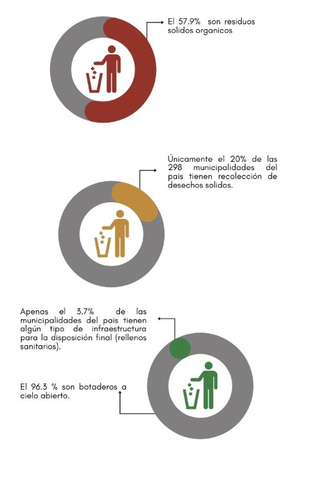
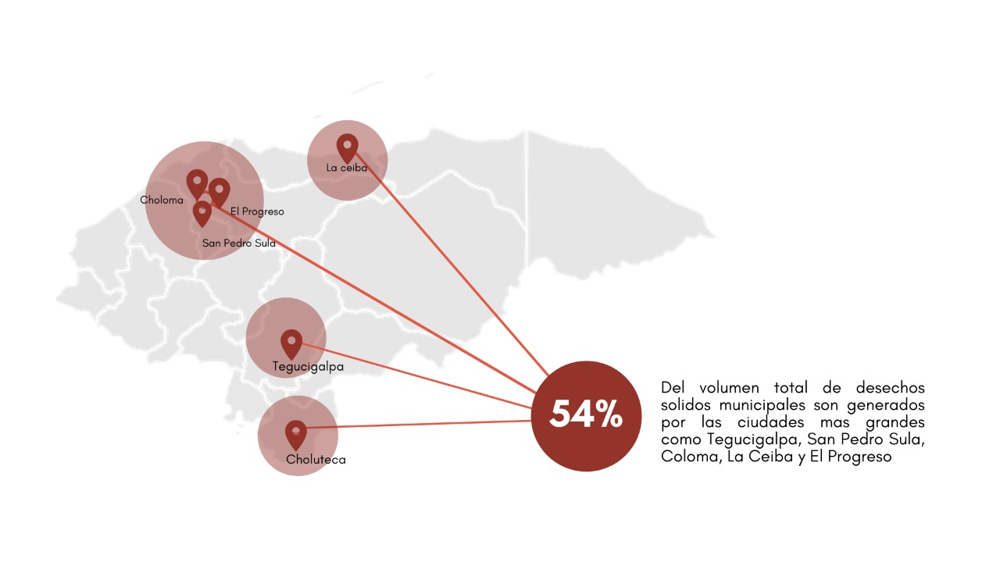
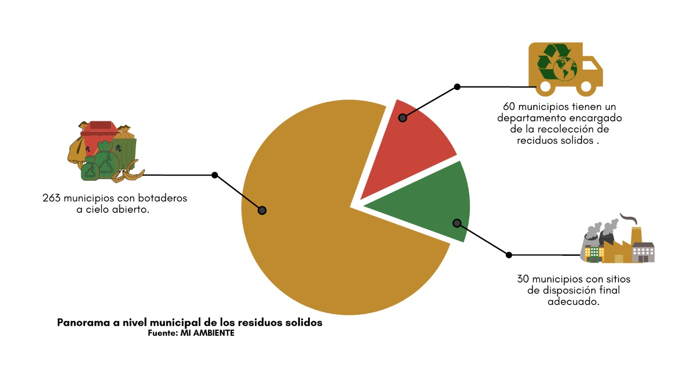
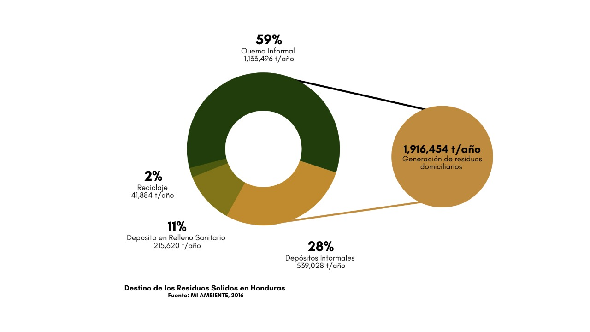

Panorama General
La generación de residuos solidos en Honduras muestra una tendencia en medida que aumenta la población y las actividades productivas de sector residencial e industrial. Para el Año 2002 la GPC promedio de residuos solidos domiciliarios para Honduras se estimo en 0.50 kg/hab/día. Para 2013 mas de 8 millones de habitantes generaban 4,151.9 ton/día de residuos. Para 2016 se generaron 0.65 kg/día, 5,666 t/día y 1.97 millones t/año.




EMISIONES DEL SECTOR DE ESTUDIOS


Debido a la ausencia información específica sobre los volúmenes de residuos y efluentes en el país, todas las categorías de este sector (con excepción de la categoría 4D2) fueron estimadas utilizando la población de Honduras
como uno de los principales datos de actividad. Consecuentemente, las variaciones observadas son debido al crecimiento de la población y no de cambios en los sistemas de tratamiento. Para la categoría Tratamiento y eliminación
de aguas residuales industriales (4D2) la variación es consecuencia del crecimiento de la producción industrial.